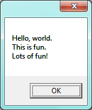
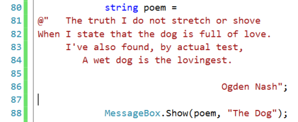
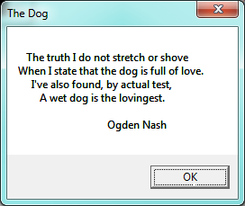
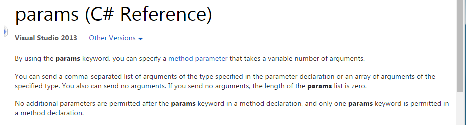
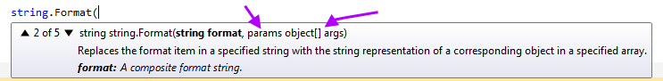
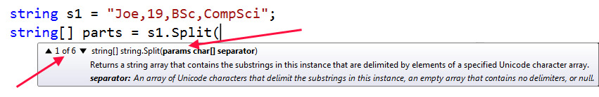
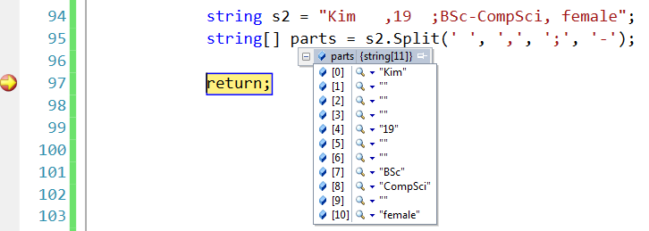
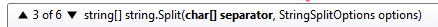
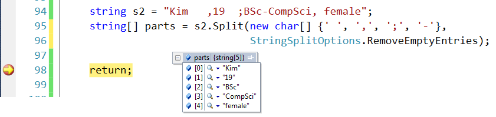
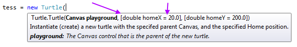

17. Odds and Ends¶
In this chapter we cover a couple of useful things about C# that we omitted for simplicity in earlier sections of the book.
17.1. Escape sequences in strings¶
Some characters (like a newline) are not printable (or directly typeable on the keyboard), but we’d like a way to make them part of our strings. So here is the workaround.
Executing this fragment of code
gives us this:

When we code up an “ordinary” literal string,
- The string may not extend over more than one line of code in our program.
- We can put escape sequences with special meaning into the strings. In this case the
\nescape sequence stands for just one character, called “newline”. The backslash character is called the escape character, and means “I’m not really a backslash, but here comes a something special”. There are a few other escape sequences used sometimes. But the important thing is that when we see a backslash in a string, it doesn’t mean backslash!
So what do we do if we need a real backslash in a string, as in C:\temp\myfile.txt?
We have to escape our backslash with its own backslash — so we code up two backslashes
to end up with just one in our string. So the usual way to code
a file path like the above in C# is "C:\\temp\\myfile.txt". Note that the length
of this string is 18, not 20! Each escaped sequence \n or \\ is just a one
character in the string.
For a list of common character escapes see https://msdn.microsoft.com/en-us/library/4edbef7e(v=vs.110).aspx
17.2. Verbatim literal strings¶
The escape mechanism described above was introduced in C, the grandparent language of C#, so we still use it. But over time we thought “Wouldn’t it be better to sometimes be able to turn off the string escape mechanism?”
So there is another newer way to code up literal strings: if the string starts with @"
it is called a verbatim string. Two things happen: none of the characters are
treated as escapes, and the string can flow over more than a single line of source code. Any
newline characters in the source string become newline characters in the string, and any single
backslash characters are backslashes!
So here is a simple fragment of code:

which pops up this message box:

You’ll quite often find verbatim strings used with file paths: @"C:\temp\myfile.txt".
With hindsight, it now seems a bit weird to have a special-case escape mechanism and then a second layer of special syntax to turn off the first lot of special cases, but that is what history has left us with! And even as C# keeps evolving, in C# 6.0 they are introducing even more mechanisms into strings! http://www.codeproject.com/Articles/846566/What-s-new-in-Csharp-String-Interpolation
17.3. The params keyword¶
Let’s use Microsoft’s explanation for this one:
When is this used? One example we’ve seen is the string.Format method,
where we can pass in a formatting string and a variable number
of arguments that should be plugged into the string, as shown in this fragment:
As we’re typing this in, Visual Studio pops up some intellisense help:

But wait! The big deal here, different from what we’ve seen before, is that this string.Format
signature only defines two parameters, but our call site in line 4 above supplies five arguments.
How do we pass 5 arguments to just 2 parameters? The first
argument is assigned to the first parameter, and because of the params keyword,
all the remaining arguments are bundled up into
an array, and (a reference to) the array is assigned to the second parameter. The IntelliSense
above shows the signature of the Format method, with some highlighted cues that we should learn to notice:
We can write our own methods that use the params keyword.
See the Microsoft reference at http://msdn.microsoft.com/en-us/library/w5zay9db.aspx
if you want an example of how to do that.
17.4. string.Split revisited¶
The Split method on strings cuts (a copy of) a string into pieces. The cuts are made on
the delimiters we pass to the method. For example,
will chop s1 into parts by removing each comma. So we’ll end up with an
array of four strings in parts. (Notice that s1 still has its original
value: recall that strings are read-only and can never by modified.)
When we’re typing the above code into Visual Studio we get some interesting IntelliSense:
Notice two important things:
- There are six different overloadings of this method, and we’re currently looking at the hint for the first one. Clicking the triangles allows us to see all the other overloadings. (Or pressing F1 for help while your cursor is over the word Split should invoke help, where you can read about the different overloadings.)
- The first overloading has a
paramskeyword. We can pass in any number of delimiters (even zero).
So the semantics (meaning) of Split is quite tricky:
- If you pass no arguments at all to
Split, e.g.string[] xs = poem.Split();the delimiters are taken to be any white space characters (spaces, newlines, tabs, etc.) - If you pass just a space, it becomes the only delimiter. Other white space characters like tab or newline will not be used to separate parts of the string.
- If you pass in multiple delimiters, any one of them causes a cut whenever it is found.
Let’s consider this example:

At line 95 we split the string on any of four delimiters — spaces; commas; semicolons; or hyphens.
We’ve put a breakpoint at line 97, and are inspecting the parts array to see
what we got. Notice that none of the delimiters occur in any of the parts, and the string has
been split where we asked for splits.
But we also notice that there are some empty strings in the parts array: whenever two of
our delimiters occur next to one another or at the end/start of the string, the section between them becomes an empty string.
So the multiple spaces, and the space next to a comma or a semicolon all generate extra
(perhaps unwanted) empty strings.
Let’s fix this common problem. Overloading 3 of the Split method
allows us to provide some extra options to control how Split works — in particular,
it allows us to tell Split to remove all empty entries from the result. The
signature is

It is a bit trickier to use this version of Split because it wants us to pass in
an array of delimiters (separators) now. That array can even be the value null —
in which case Split assumes we want to split on white space.
So here is the new code, with more satisfying results — no empty strings in the resulting array:

17.5. Optional Parameters¶
We’ve created quite a few turtles so far: have you ever noticed this?

What the square bracket notation means in this IntelliSense pop-up
is that homeX and homeY are optional parameters — at the
call site we may optionally provide arguments to pass into the parameters,
but if we don’t tell the turtle what its home position is, it will use
some default values instead. In this case the default homeX value is
20.0, and the default homeY value is 200.0.
Note that the square brackets used here are not part of the C# syntax — they are what we call meta-notation. They they tell us that supplying these arguments is optional.
So in our first chapter about turtles we saw both ways of using this:
17.6. Glossary¶
- default value
- A value that is used if the programmer does not explicitly choose another value.
- escape sequence
- In a literal string, the backslash
\is treated as an escape character. This mechanism allows us to write special escape sequences that can put non-printable or special characters into our strings. - optional parameters
- Parameters in a method for which the call site may provide arguments. If the call site chooses not to provide an argument, the parameter will be given a default value.
params- A keyword in C# that is used before an array of parameters. It allows us to write methods that can pass a variable number of arguments (perhaps zero) which are all assigned to a single parameter.
- verbatim literal strings
- A string that starts with
@". It can span multiple lines, and does not process escape characters. What we see is what we get!
17.7. Exercises¶
This string contains some escape characters (of a form that we never covered in this chapter).
1 2
string s = "\u2659 \u265A \u2669 \u266A \u266B \u266C \u263a"; textBox1.Text = s;
Assign the string to the text of a text box, where we can make the font big. Or output the string as a MessageBox, set your Window title to this string. What do we get? See http://en.wikipedia.org/wiki/Miscellaneous_Symbols.